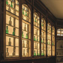

Pesquisa
O museu é também um centro de estudo: o acervo está aberto a pesquisadores, estudantes e professores.
Linhas de pesquisa
- Cultura material e vida cotidiana - objetos domésticos e de trabalho como fonte para a história social dos séculos XIX e XX.
- Arqueologia regional - ocupação pré-colonial do litoral e do planalto, em cooperação com universidades do estado.
- Coleções etnográficas e protagonismo indígena - revisão da catalogação junto às comunidades de origem.
- Biodiversidade e coleções zoológicas - uso das séries históricas para estudar mudanças na fauna regional.
- Conservação preventiva - métodos de guarda para madeira, papel e têxteis em clima úmido.
Biblioteca e arquivo

A biblioteca reúne cerca de 18 mil volumes, com destaque para periódicos científicos do século XIX e para os relatórios de expedição que originaram boa parte do acervo. O arquivo institucional guarda a correspondência, os livros de tombo e as fotografias de montagem das exposições desde 1923.
A consulta é gratuita e feita na sala de leitura, de terça a sexta, das 9h às 16h. Não há empréstimo domiciliar. Obras raras e documentos originais exigem pedido prévio e são consultados sob acompanhamento.
Como solicitar acesso ao acervo
- Envie o pedido pela página de contato, indicando o tema, o período pretendido e a instituição de vínculo.
- Anexe uma carta de apresentação do orientador ou da instituição, quando houver vínculo acadêmico.
- Aguarde o parecer da curadoria da área, normalmente em até dez dias úteis.
- Agende as datas de consulta com o setor de documentação.
Pedidos que envolvam manuseio de peças, medição, amostragem ou fotografia técnica passam por análise do setor de conservação e podem exigir prazo maior.
Bolsas e residência
Todo ano o museu abre vagas de iniciação científica para estudantes de graduação e duas vagas de residência técnica em conservação, com duração de doze meses. As chamadas são publicadas no primeiro semestre e divulgadas também nas universidades parceiras.
- Iniciação científica - seis vagas, uma por área de curadoria
- Residência em conservação - duas vagas, com bolsa e supervisão do laboratório
- Estágio em educação em museus - quatro vagas por semestre
Publicações
Os resultados de pesquisa saem nos Cadernos do Museu, de periodicidade semestral, e nos catálogos que acompanham as exposições de longa duração. Números anteriores podem ser consultados na biblioteca ou solicitados em formato digital.
Exposições itinerantes em escolas
Escolas públicas do estado podem receber um módulo expositivo por um período de até quatro semanas, sem custo, incluindo a formação dos professores que vão acompanhar a visita. O calendário é definido no início de cada semestre; a solicitação segue pelo mesmo formulário da página de contato.